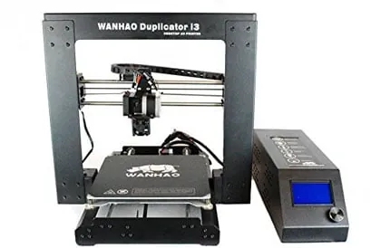
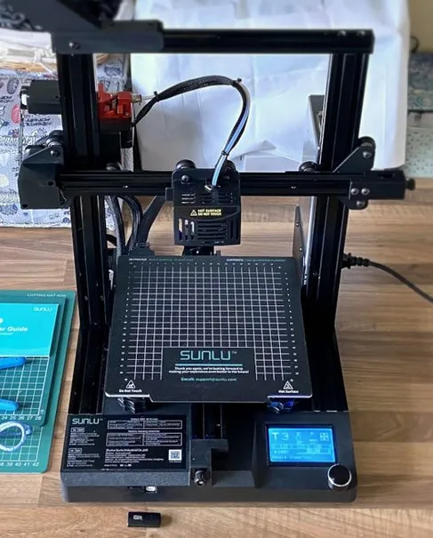

Inicio / Impresión 3D
Dos impresoras, un solo flujo de trabajo: del archivo .STL a la pieza física. Tecnología FDM: fundir filamento de plástico capa por capa.


Termoplástico biodegradable de origen vegetal (derivado del almidón de maíz o la caña de azúcar). Seguro, no tóxico y sin olores fuertes: ideal para el entorno escolar.
| Característica | Wanhao Duplicator i3 Plus | Sunlu T3 |
|---|---|---|
| Enfoque de aprendizaje | Calibración mecánica manual | Alta velocidad + nivelación asistida |
| Volumen de impresión | 200 × 200 × 180 mm | 220 × 220 × 250 mm |
| Nivelación de cama | Manual (ruedas + papel) | Automática (sensor magnético, 16 puntos) |
| Velocidad estándar | 40 – 50 mm/s | 80 – 150 mm/s (hasta 250) |
| Sensor de filamento | No | Sí (pausa automática) |
| Entrada de archivos | MicroSD / USB | SD / USB |
Las boquillas alcanzan 190–210 °C y las camas calientes hasta 60 °C. Nunca toques la boquilla encendida o en proceso de enfriamiento.
Mantén manos, cables y ropa alejados de las correas y motores mientras los ejes estén en movimiento.
Para retirar piezas de la plataforma, usa la espátula haciendo palanca en dirección opuesta a tu cuerpo y a tus manos.
| Parámetro | Wanhao Duplicator i3 Plus | Sunlu T3 |
|---|---|---|
| Temperatura del extrusor | 200 °C (PLA) | 205 °C (PLA) |
| Temperatura de cama | 60 °C | 60 °C |
| Altura de capa | 0.2 mm estándar | 0.2 mm (0.16 para detalle) |
| Relleno (infill) | 15–20 % (Grid o Gyroid) | 15–20 % |
| Velocidad de impresión | 40–50 mm/s | 80–120 mm/s |
| Retracción | 2–4 mm @ 35 mm/s | 5–6 mm @ 45 mm/s |
| Adherencia a la cama | Skirt (o Brim si es delgada) | Skirt |
| Soportes | Solo voladizos > 45° | Solo voladizos > 45° |
Selecciona Home → Desactiva motores (Disable Steppers) → desliza una hoja de papel entre la boquilla y la cama → gira las 4 ruedas hasta sentir ligera fricción en cada esquina y en el centro.
| Problema | Causa probable | Solución |
|---|---|---|
| La pieza se despega de la base (warping) | Cama mal nivelada o superficie con grasa/polvo | Wanhao: re-nivela las 4 esquinas · Sunlu: ajusta el Z-Offset y limpia con alcohol |
| No sale plástico por la boquilla (atasco) | Temperatura baja o boquilla obstruida | Verifica 200 °C+ · limpia con aguja por la parte inferior de la boquilla caliente |
| Hilos de plástico entre esquinas (stringing) | Retracción muy baja | Aumenta la retracción en el laminador: 4 mm Wanhao / 6 mm Sunlu |
| La Sunlu T3 pausa la impresión sola | El sensor no detecta filamento | Revisa que el filamento pase por el sensor superior sin estar tenso |